Chapter 9 決定木分析
決定木 (decision tree) は, 学習データに含まれる説明変数空間を, 目的変数との関係に基づいて (目的変数がなるべく均質になるように) 階層的に分割する手法である.
この分割は, 目的関数（回帰問題であればMSEなど, 分類問題であればジニ不純度やエントロピー等）を最適化するように, 一回につき1変数, 学習データに基づいて逐次行われる.
逐次分割のルールは, 木構造で表現される.
- ルートノード： 木の最上部. データセット全体を表現
- (内部) ノード： データセットの分割条件 (質問や条件)を表現. データセットが分割される
- リーフノード （末端ノード）: 分類されたデータセットの最終的な出力を表現. これ以上の分割は行われない
「決定木はデータセットの分割ルールを自動生成する」 という説明がなされることがあるが, 不正確であることに注意が必要である.
正確には, 生成されるのは「説明変数空間の分割規則」であり, 分割後の各領域に対応した予測値（分類ラベルや回帰適合値） が付与されているに過ぎない.
決定木分析を行う標準的な関数として,
パッケージrpartの関数rpart()がある.
回帰木, 分類木どちらにも適用可能である.
本章では, 決定木の基本的な動作を, Rに標準で含まれるデータとパッケージISLR2のデータで確認する.
授業の R 演習 (R_DT_Ensemble_dist.R) で扱った個人ローン信用データ (german credit) による分類木と, その評価は, 次章で扱う.
9.1 導入: 回帰木 vs 線形回帰
データセット1: 自動車の制動距離
決定木の特徴を理解するため, 金明哲(2017)『Rによるデータサイエンス』でも紹介されている 例を取り上げる.
Rに標準的に含まれているデータセットcarsを使い,
ブレーキをかけて停止するまでの移動距離を目的変数,
自動車の速度を説明変数とする場合の,
線形回帰と決定木 (回帰木) の適合の結果を比較する.
- cars
- speed: 自動車の速度 (mph)
- dist: ブレーキをかけて自動車が停止するまでの距離 (feet)
- Rの標準データセット# cars
head(cars)
#> speed dist
#> 1 4 2
#> 2 4 10
#> 3 7 4
#> 4 7 22
#> 5 8 16
#> 6 9 10
tail(cars)
#> speed dist
#> 45 23 54
#> 46 24 70
#> 47 24 92
#> 48 24 93
#> 49 24 120
#> 50 25 85
# cars['speed']
plot(cars)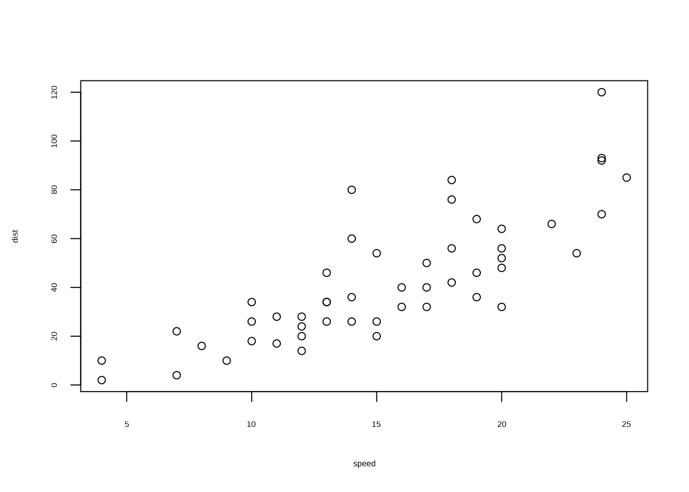
- 単回帰分析 すでに上で解説した通りの操作を行う.
# 単回帰分析
cars_lm <- lm(dist ~ speed, data = cars)
summary(cars_lm)
#>
#> Call:
#> lm(formula = dist ~ speed, data = cars)
#>
#> Residuals:
#> Min 1Q Median 3Q Max
#> -29.069 -9.525 -2.272 9.215 43.201
#>
#> Coefficients:
#> Estimate Std. Error t value Pr(>|t|)
#> (Intercept) -17.5791 6.7584 -2.601 0.0123 *
#> speed 3.9324 0.4155 9.464 1.49e-12 ***
#> ---
#> Signif. codes: 0 '***' 0.001 '**' 0.01 '*' 0.05 '.' 0.1 ' ' 1
#>
#> Residual standard error: 15.38 on 48 degrees of freedom
#> Multiple R-squared: 0.6511, Adjusted R-squared: 0.6438
#> F-statistic: 89.57 on 1 and 48 DF, p-value: 1.49e-12
# 回帰係数の取り出し
cars_lm$coef
#> (Intercept) speed
#> -17.579095 3.932409
coefficients(cars_lm)
#> (Intercept) speed
#> -17.579095 3.932409
# 回帰直線の図示
plot(cars)
abline(cars_lm)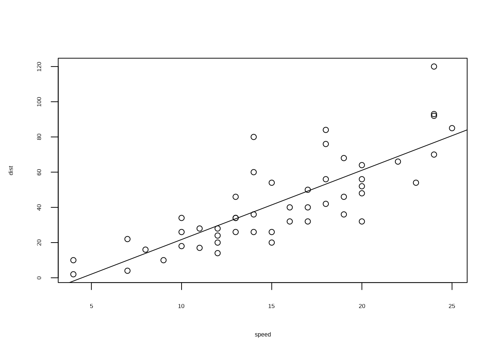
# モデル診断（残差プロット等) plot(cars_lm)\t\t 4枚表示: 残差vs Y適合値, 残差
# vs Q - Qプロット, 残差平方根 vs Y適合値, 残差 vs 影響力(てこ値とCook距離)- 予測
# 学習データに対する適合値 (内挿予測)
cars_pred <- predict(cars_lm)
# 残差
cars_resd <- residuals(cars_lm)
# 予測値 vs 残差
plot(cars_pred, cars_resd)
abline(h = 0, lty = 2)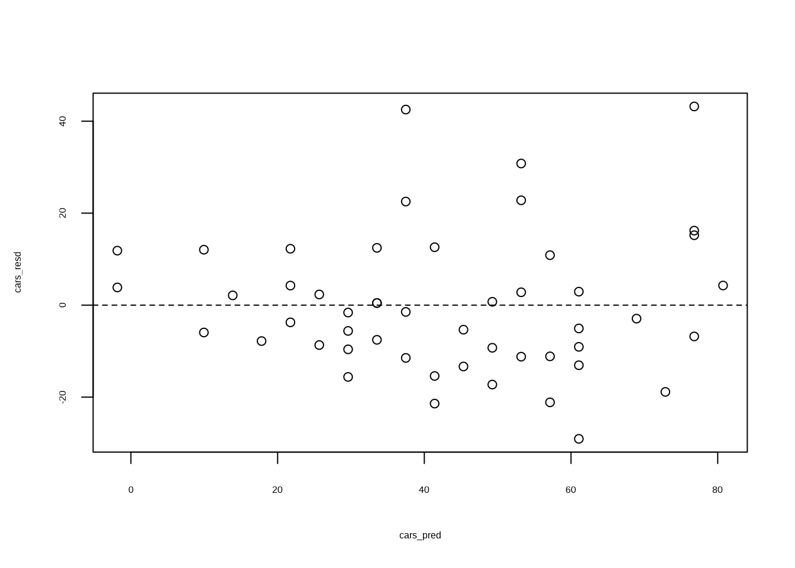
data.frame(cars, cars_pred, cars_resd)
#> speed dist cars_pred cars_resd
#> 1 4 2 -1.849460 3.849460
#> 2 4 10 -1.849460 11.849460
#> 3 7 4 9.947766 -5.947766
#> 4 7 22 9.947766 12.052234
#> 5 8 16 13.880175 2.119825
#> 6 9 10 17.812584 -7.812584
#> 7 10 18 21.744993 -3.744993
#> 8 10 26 21.744993 4.255007
#> 9 10 34 21.744993 12.255007
#> 10 11 17 25.677401 -8.677401
#> 11 11 28 25.677401 2.322599
#> 12 12 14 29.609810 -15.609810
#> 13 12 20 29.609810 -9.609810
#> 14 12 24 29.609810 -5.609810
#> 15 12 28 29.609810 -1.609810
#> 16 13 26 33.542219 -7.542219
#> 17 13 34 33.542219 0.457781
#> 18 13 34 33.542219 0.457781
#> 19 13 46 33.542219 12.457781
#> 20 14 26 37.474628 -11.474628
#> 21 14 36 37.474628 -1.474628
#> 22 14 60 37.474628 22.525372
#> 23 14 80 37.474628 42.525372
#> 24 15 20 41.407036 -21.407036
#> 25 15 26 41.407036 -15.407036
#> 26 15 54 41.407036 12.592964
#> 27 16 32 45.339445 -13.339445
#> 28 16 40 45.339445 -5.339445
#> 29 17 32 49.271854 -17.271854
#> 30 17 40 49.271854 -9.271854
#> 31 17 50 49.271854 0.728146
#> 32 18 42 53.204263 -11.204263
#> 33 18 56 53.204263 2.795737
#> 34 18 76 53.204263 22.795737
#> 35 18 84 53.204263 30.795737
#> 36 19 36 57.136672 -21.136672
#> 37 19 46 57.136672 -11.136672
#> 38 19 68 57.136672 10.863328
#> 39 20 32 61.069080 -29.069080
#> 40 20 48 61.069080 -13.069080
#> 41 20 52 61.069080 -9.069080
#> 42 20 56 61.069080 -5.069080
#> 43 20 64 61.069080 2.930920
#> 44 22 66 68.933898 -2.933898
#> 45 23 54 72.866307 -18.866307
#> 46 24 70 76.798715 -6.798715
#> 47 24 92 76.798715 15.201285
#> 48 24 93 76.798715 16.201285
#> 49 24 120 76.798715 43.201285
#> 50 25 85 80.731124 4.2688769.1.1 基本操作: 回帰木
シンタックスはそのままで,
lm()の代わりにrpart()と書き換えれば,
回帰木が適合される.
library(rpart)
cars_rp <- rpart(dist ~ speed, data = cars)
summary(cars_rp) # ==> 葉3枚
#> Call:
#> rpart(formula = dist ~ speed, data = cars)
#> n= 50
#>
#> CP nsplit rel error xerror xstd
#> 1 0.4676398 0 1.0000000 1.0214577 0.2133267
#> 2 0.1104944 1 0.5323602 0.6331985 0.1397916
#> 3 0.0100000 2 0.4218658 0.5113528 0.1217615
#>
#> Variable importance
#> speed
#> 100
#>
#> Node number 1: 50 observations, complexity param=0.4676398
#> mean=42.98, MSE=650.7796
#> left son=2 (31 obs) right son=3 (19 obs)
#> Primary splits:
#> speed < 17.5 to the left, improve=0.4676398, (0 missing)
#>
#> Node number 2: 31 observations, complexity param=0.1104944
#> mean=29.32258, MSE=267.9605
#> left son=4 (15 obs) right son=5 (16 obs)
#> Primary splits:
#> speed < 12.5 to the left, improve=0.4328244, (0 missing)
#>
#> Node number 3: 19 observations
#> mean=65.26316, MSE=474.5097
#>
#> Node number 4: 15 observations
#> mean=18.2, MSE=78.42667
#>
#> Node number 5: 16 observations
#> mean=39.75, MSE=220.9375
plot(cars_rp, uniform = T, margin = 0.05)
text(cars_rp, all = T, use.n = T)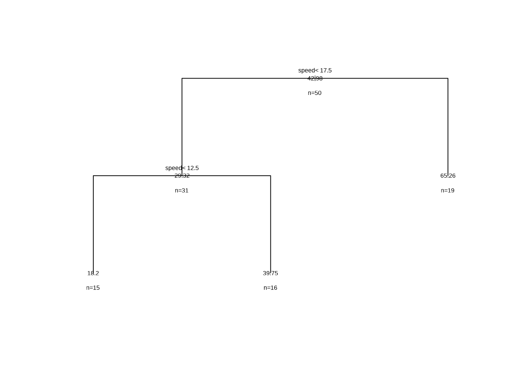
決定木の主要な出力は, 分割ルールである.
今回は, 量的説明変数が一つ (speed) のみのケースであった.
適合の結果, speedの領域を
- 【分割1】speedが17.5未満か/以上か
- 【分割2】(speedが17.5未満の領域に対して) speedが12.5未満か/以上か
のように2回分割して, 分割を終了した. 結果的に, 木の深さが2, リーフノード (末端ノード) が3個の小さな木である.
- 予測
予測値は線形回帰等と同様, 関数
predict()にrpart()の結果オブジェクトを与えることで得られる.
# 学習用データに対する適合値 (内挿予測)
cars_rp_pred <- predict(cars_rp)
cars_rp_fitted <- data.frame(cars$speed, cars_rp_pred)
plot(cars$speed, cars$dist)
lines(cars_rp_fitted, type = "s")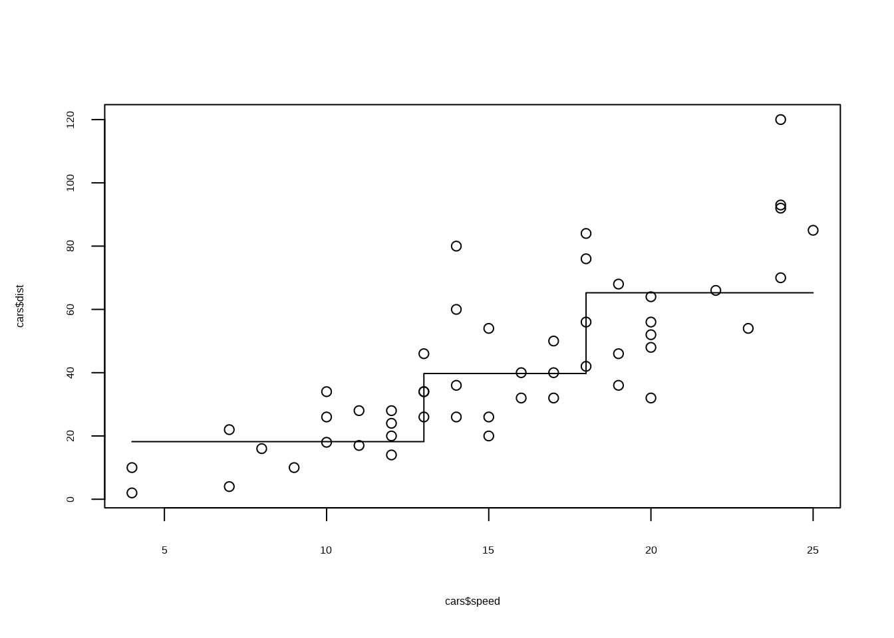
図は, 得られた (説明変数空間の) 分割ルールでは, 横軸 (説明変数speed)
は3つの領域に分割され (12.5, 17.5が境界点),
それぞれの領域における予測値は, 一定である (左から順に, 18.2, 39.75, 65.26).
この目的変数distに対する説明変数speedの区分一定 (piecewise constant)
な形状は, 予測値を具体的に出力することでも確認できる.
# 観測値, 線形回帰の適合値, 回帰木の適合値
data.frame(cars, cars_pred, cars_rp_fitted)
#> speed dist cars_pred cars.speed cars_rp_pred
#> 1 4 2 -1.849460 4 18.20000
#> 2 4 10 -1.849460 4 18.20000
#> 3 7 4 9.947766 7 18.20000
#> 4 7 22 9.947766 7 18.20000
#> 5 8 16 13.880175 8 18.20000
#> 6 9 10 17.812584 9 18.20000
#> 7 10 18 21.744993 10 18.20000
#> 8 10 26 21.744993 10 18.20000
#> 9 10 34 21.744993 10 18.20000
#> 10 11 17 25.677401 11 18.20000
#> 11 11 28 25.677401 11 18.20000
#> 12 12 14 29.609810 12 18.20000
#> 13 12 20 29.609810 12 18.20000
#> 14 12 24 29.609810 12 18.20000
#> 15 12 28 29.609810 12 18.20000
#> 16 13 26 33.542219 13 39.75000
#> 17 13 34 33.542219 13 39.75000
#> 18 13 34 33.542219 13 39.75000
#> 19 13 46 33.542219 13 39.75000
#> 20 14 26 37.474628 14 39.75000
#> 21 14 36 37.474628 14 39.75000
#> 22 14 60 37.474628 14 39.75000
#> 23 14 80 37.474628 14 39.75000
#> 24 15 20 41.407036 15 39.75000
#> 25 15 26 41.407036 15 39.75000
#> 26 15 54 41.407036 15 39.75000
#> 27 16 32 45.339445 16 39.75000
#> 28 16 40 45.339445 16 39.75000
#> 29 17 32 49.271854 17 39.75000
#> 30 17 40 49.271854 17 39.75000
#> 31 17 50 49.271854 17 39.75000
#> 32 18 42 53.204263 18 65.26316
#> 33 18 56 53.204263 18 65.26316
#> 34 18 76 53.204263 18 65.26316
#> 35 18 84 53.204263 18 65.26316
#> 36 19 36 57.136672 19 65.26316
#> 37 19 46 57.136672 19 65.26316
#> 38 19 68 57.136672 19 65.26316
#> 39 20 32 61.069080 20 65.26316
#> 40 20 48 61.069080 20 65.26316
#> 41 20 52 61.069080 20 65.26316
#> 42 20 56 61.069080 20 65.26316
#> 43 20 64 61.069080 20 65.26316
#> 44 22 66 68.933898 22 65.26316
#> 45 23 54 72.866307 23 65.26316
#> 46 24 70 76.798715 24 65.26316
#> 47 24 92 76.798715 24 65.26316
#> 48 24 93 76.798715 24 65.26316
#> 49 24 120 76.798715 24 65.26316
#> 50 25 85 80.731124 25 65.26316分割ルールを, 未学習のデータセットに対して適用してみる.
speedの値が, それぞれ, 5,6,21 (mph) の時の予測値は
以下の通りである.
予測値は, 順に18.2, 18.2, 65.26である. スピードが5でも6でも同じ停止距離 (18.2) と予測している.
すなわち, 制止までの距離が速度の変化に対して連続的に変化するような今回の事例においては, 区分一定な予測を行う回帰木の使用は明らかに不適切である.
9.2 回帰木
データセット2: 米国株価指数データ (再掲)
- Smarket: S&P500日次%リターン5年分
- Year 観測値の記録年 (2001--2005)
- Lag1 前日の%リターン
- Lag2 2日前の%リターン
- Lag3 3日前の%リターン
- Lag4 4日前の%リターン
- Lag5 5日前の%リターン
- Volume 取引量 (日次取引株式数, 単位十億枚)
- Today 当日の%リターン
- Direction 相場の方向性 (Down/Up, 2-水準因子)本節と次節 (分類木) は, 決定木の動作を確認し, その特性を理解することを目的とする. 決定木の機能である, データセットの分類規則の生成にフォーカスし, データセットは学習用・予測用に2分割せず全てを使って学習させる. ここでは, 容易でないタスク (株価予測) を決定木で行うが, 予測力についてはいまは議論しない.
library(ISLR2)
head(Smarket)
#> Year Lag1 Lag2 Lag3 Lag4 Lag5 Volume Today Direction
#> 1 2001 0.381 -0.192 -2.624 -1.055 5.010 1.1913 0.959 Up
#> 2 2001 0.959 0.381 -0.192 -2.624 -1.055 1.2965 1.032 Up
#> 3 2001 1.032 0.959 0.381 -0.192 -2.624 1.4112 -0.623 Down
#> 4 2001 -0.623 1.032 0.959 0.381 -0.192 1.2760 0.614 Up
#> 5 2001 0.614 -0.623 1.032 0.959 0.381 1.2057 0.213 Up
#> 6 2001 0.213 0.614 -0.623 1.032 0.959 1.3491 1.392 Up- 回帰木の構築
Smarketを使って, 回帰木を構築する.
回帰木では当日の%リターンTodayを目的変数とする.
Smarketには, 当日の相場の上下の方向性を示す
質的変数 (因子) Directionが含まれているが, これはTodayの予測変数に
使えないため除去する. 記録年であるYearも当日のリターン予測には
(常識的に考えて) 使えないので除く.
Volumeは, Todayと同じタイミングで得られる情報であるため,
ここでは予測変数からは除いておくが, ラグ変数にするなどの工夫を
すれば使っても良い.
library(tidyverse)
sp500 <- Smarket %>%
dplyr::select(-Year, -Direction, -Volume)
# Volumeは当日情報のため, 除いておく → 日付をずらせば加えても良い
# sp500$Vol_lag1 <- dplyr::lead(Smarket$Volume, n = 1)- 回帰木の適合
sp_rp <- rpart(Today ~ ., data = sp500)
sp_rp
#> n= 1250
#>
#> node), split, n, deviance, yval
#> * denotes terminal node
#>
#> 1) root 1250 1612.77800 0.00313840
#> 2) Lag5>=-2.892 1236 1528.47500 -0.01281958 *
#> 3) Lag5< -2.892 14 56.19987 1.41200000 *
#
sp_rp <- rpart(Today ~ ., data = sp500, control = rpart.control(cp = 0.008))
sp_rp
#> n= 1250
#>
#> node), split, n, deviance, yval
#> * denotes terminal node
#>
#> 1) root 1250 1612.77800 0.00313840
#> 2) Lag5>=-2.892 1236 1528.47500 -0.01281958 *
#> 3) Lag5< -2.892 14 56.19987 1.41200000 *
#
sp_rp <- rpart(Today ~ ., data = sp500, control = rpart.control(cp = 0.0079))
# rpart.control(minsplit = 20, minbucket = round(minsplit/3), cp = 0.01,
# maxcompete = 4, maxsurrogate = 5, usesurrogate = 2, xval = 10, surrogatestyle
# = 0, maxdepth = 30, ...) method: 'anova', 'poisson', 'class' or 'exp'
sp_rp
#> n= 1250
#>
#> node), split, n, deviance, yval
#> * denotes terminal node
#>
#> 1) root 1250 1612.77800 0.00313840
#> 2) Lag5>=-2.892 1236 1528.47500 -0.01281958
#> 4) Lag1>=0.2225 502 549.98260 -0.12242230 *
#> 5) Lag1< 0.2225 734 968.33720 0.06214033
#> 10) Lag2>=-0.291 496 567.84910 -0.02306048 *
#> 11) Lag2< -0.291 238 389.38390 0.23970170
#> 22) Lag5< -1.7375 15 49.41417 -0.80153330 *
#> 23) Lag5>=-1.7375 223 322.61330 0.30973990 *
#> 3) Lag5< -2.892 14 56.19987 1.41200000 *- 得られた回帰木の可視化
決定木は, 説明変数の空間を分割するルールを生成する手法であり, 解釈容易性が大きな強みである. 解釈容易性を助けるため, 生成されたルールを表す木を表示するための関数が用意されている.
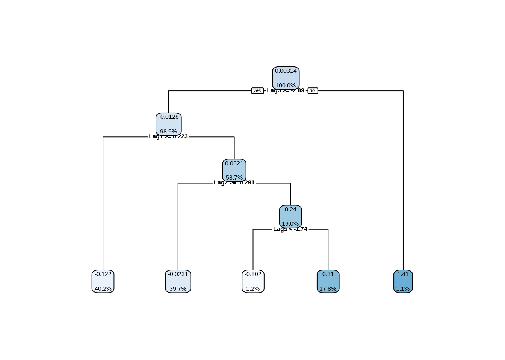
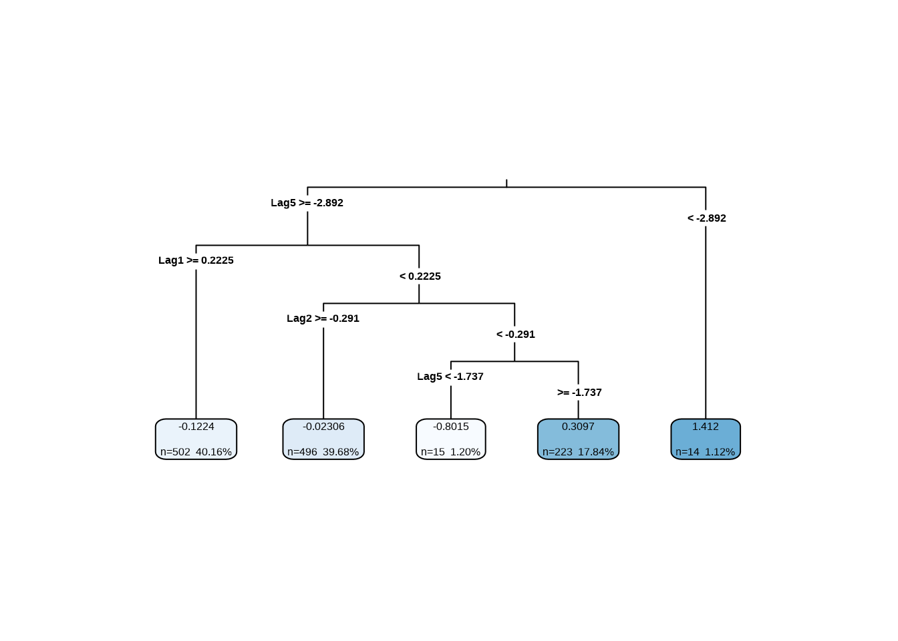
- CP表 (Complexity Parameter Table)
# CP値 vs 交差検証 (CV) 予測誤差
printcp(sp_rp)
#>
#> Regression tree:
#> rpart(formula = Today ~ ., data = sp500, control = rpart.control(cp = 0.0079))
#>
#> Variables actually used in tree construction:
#> [1] Lag1 Lag2 Lag5
#>
#> Root node error: 1612.8/1250 = 1.2902
#>
#> n= 1250
#>
#> CP nsplit rel error xerror xstd
#> 1 0.0174254 0 1.00000 1.00127 0.059285
#> 2 0.0079811 1 0.98257 0.99952 0.057947
#> 3 0.0079000 4 0.95863 1.06989 0.062800
plotcp(sp_rp)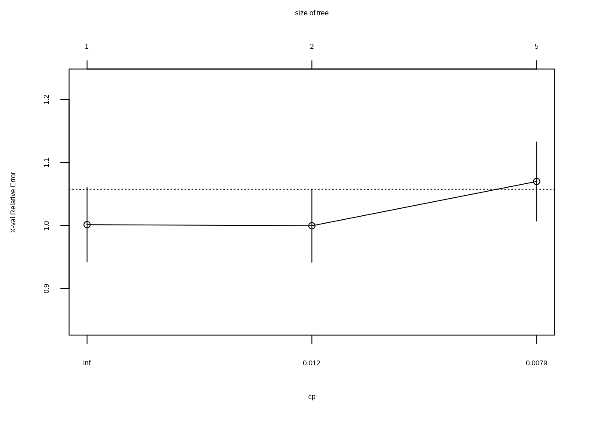
plotcp()は, 複雑度パラメータ cp (下側の横軸. 上側の横軸は対応する木のサイズ = 末端ノード数) に対する
交差検証 (CV) 予測誤差 (縦軸. 根ノードの誤差を1とした相対値) をプロットした図である.
図の右に行くほど cp は小さく, 木は大きく (複雑に) なる.
点線は, CV 誤差の最小値にその標準誤差を1つ加えた水準であり,
点線を下回る中で最も左の (最も単純な) 木を選ぶのが, 通常推奨される選び方 (1-SE ルール) である.
上で得られた図は, 木を大きくする (cp を小さくする) と, 交差検証誤差の大きさ (縦軸) が上がる, すなわち, 木を複雑にすると予測誤差が悪化することを示している.
点線を下回っているのは木のサイズが1または2の時のみで, 1から2になると若干だが誤差は大きくなっており, データセットを分割することの説得力はこの図からは得られない. 株価予測の難しさを反映していると考えられる.
# 手動による剪定例 cp (complex parameter) の大きさでコントロール
prn_rp <- prune(sp_rp, cp = 0.008)
plot(prn_rp, uniform = T, margin = 0.05)
text(prn_rp, all = T, use.n = T)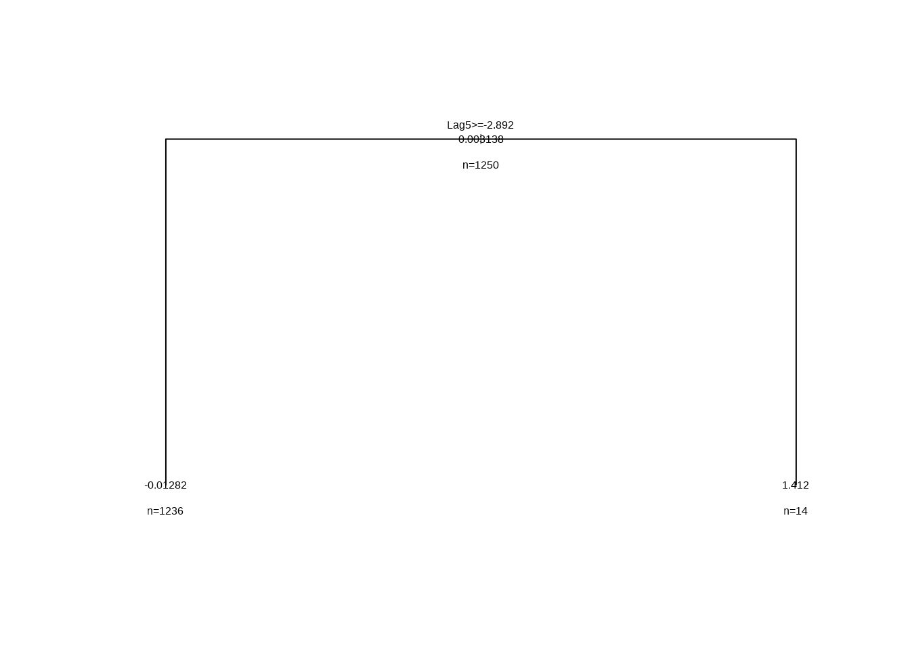
- パフォーマンス評価 (内挿予測)
自主課題 上で得られた決定木を解釈してみよう.
9.3 分類木
同じ Smarketを使って, 分類木を構築する.
回帰木では当日の%リターンTodayを目的変数としていたが,
ここでは, 質的変数 (因子) Directionを目的変数に設定する.
Directionは, Todayを使って作られていることから,
Todayを予測変数に使わないようにYear, Volumeと共に除く.
sp500_2 <- Smarket %>%
dplyr::select(-Year, -Today, -Volume)
# sp500_2$Vol_lag1 <- dplyr::lead(Smarket$Volume, n = 1)- 分類木の適合
sp2_rp <- rpart(Direction ~ ., data = sp500_2)
sp2_rp
#> n= 1250
#>
#> node), split, n, loss, yval, (yprob)
#> * denotes terminal node
#>
#> 1) root 1250 602 Up (0.4816000 0.5184000)
#> 2) Lag1>=0.0555 610 286 Down (0.5311475 0.4688525)
#> 4) Lag1< 0.1375 50 14 Down (0.7200000 0.2800000) *
#> 5) Lag1>=0.1375 560 272 Down (0.5142857 0.4857143)
#> 10) Lag2>=0.635 118 45 Down (0.6186441 0.3813559) *
#> 11) Lag2< 0.635 442 215 Up (0.4864253 0.5135747)
#> 22) Lag4>=1.1645 53 18 Down (0.6603774 0.3396226) *
#> 23) Lag4< 1.1645 389 180 Up (0.4627249 0.5372751)
#> 46) Lag4< 0.833 363 174 Up (0.4793388 0.5206612)
#> 92) Lag2< -0.5965 134 60 Down (0.5522388 0.4477612) *
#> 93) Lag2>=-0.5965 229 100 Up (0.4366812 0.5633188) *
#> 47) Lag4>=0.833 26 6 Up (0.2307692 0.7692308) *
#> 3) Lag1< 0.0555 640 278 Up (0.4343750 0.5656250)
#> 6) Lag5< -0.8225 128 57 Down (0.5546875 0.4453125)
#> 12) Lag4< 1.3205 111 44 Down (0.6036036 0.3963964) *
#> 13) Lag4>=1.3205 17 4 Up (0.2352941 0.7647059) *
#> 7) Lag5>=-0.8225 512 207 Up (0.4042969 0.5957031)
#> 14) Lag2>=0.7265 101 49 Down (0.5148515 0.4851485)
#> 28) Lag2< 1.097 39 11 Down (0.7179487 0.2820513) *
#> 29) Lag2>=1.097 62 24 Up (0.3870968 0.6129032) *
#> 15) Lag2< 0.7265 411 155 Up (0.3771290 0.6228710) *- 得られた分類木の可視化
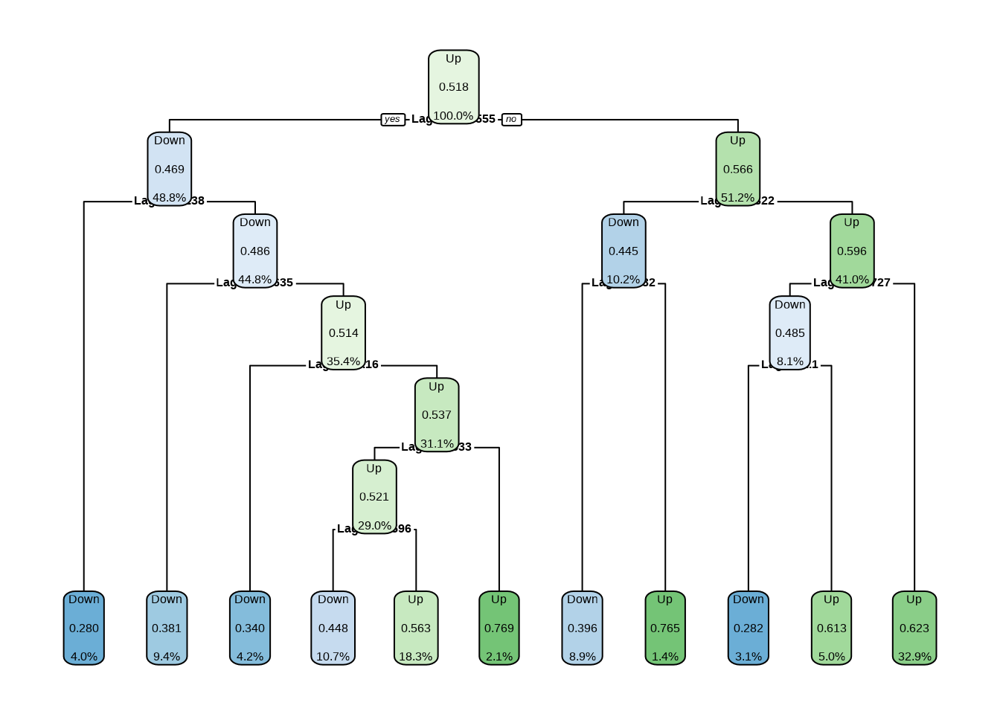
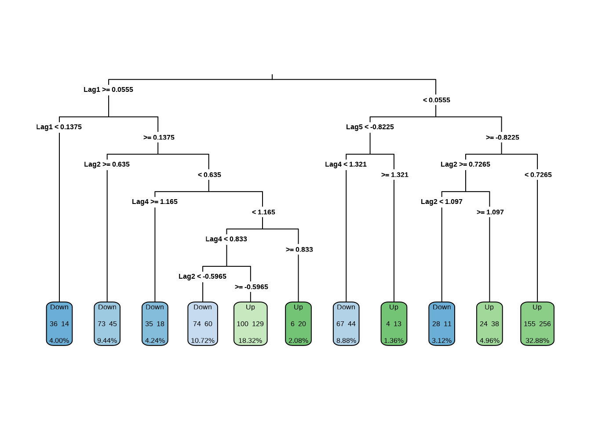
- CP表 (Complexity Parameter Table)
# CP値 vs 交差検証 (CV) 予測誤差
printcp(sp2_rp)
#>
#> Classification tree:
#> rpart(formula = Direction ~ ., data = sp500_2)
#>
#> Variables actually used in tree construction:
#> [1] Lag1 Lag2 Lag4 Lag5
#>
#> Root node error: 602/1250 = 0.4816
#>
#> n= 1250
#>
#> CP nsplit rel error xerror xstd
#> 1 0.063123 0 1.00000 1.00000 0.029345
#> 2 0.023256 1 0.93688 0.99336 0.029337
#> 3 0.016058 2 0.91362 1.01661 0.029359
#> 4 0.014950 5 0.86545 1.02159 0.029361
#> 5 0.014120 6 0.85050 1.02326 0.029362
#> 6 0.011628 8 0.82226 1.01163 0.029355
#> 7 0.010000 10 0.79900 1.02159 0.029361
plotcp(sp2_rp)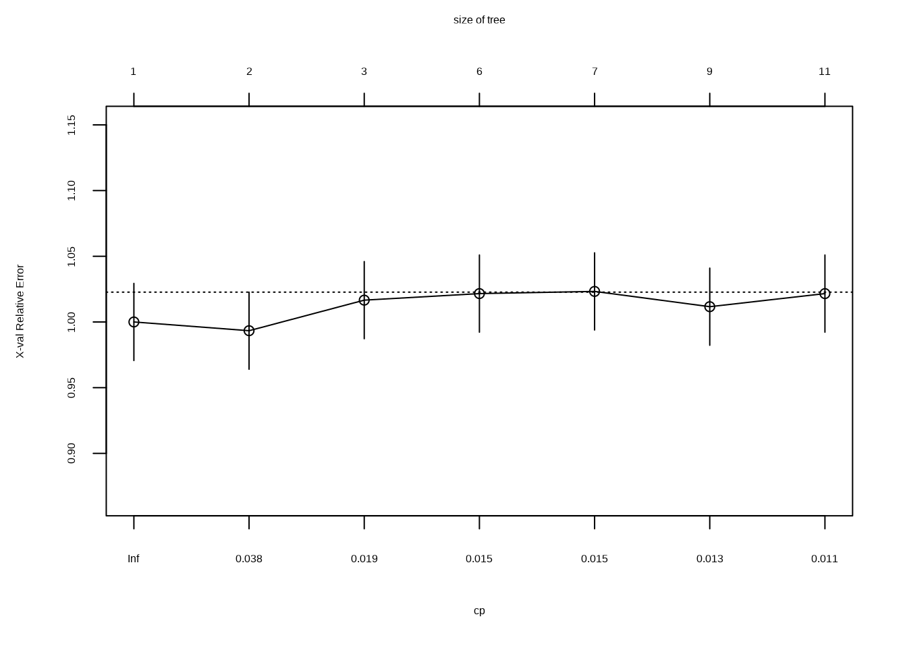
上の図は, cp (横軸) が増えても, 交差検証予測誤差の大きさ (縦軸) が点線の回りで上下するだけで 大きな変化が見られない, すなわち, 木の複雑度を変えても適合が改善しないことを示している. やはり, 株価予測 (実質的にランダム) を行っていることに よる帰結だと考えられる.
- パフォーマンス評価 (内挿予測)
# クラス分類の内挿予測
pcls_sp_rp <- predict(sp2_rp, sp500_2, type = "class") # クラス分類の予測結果出力
# 正解率
mean(pcls_sp_rp == sp500_2$Direction)
#> [1] 0.6152
# 混同行列
(tbl_rp <- table(pcls_sp_rp, sp500_2$Direction))
#>
#> pcls_sp_rp Down Up
#> Down 313 192
#> Up 289 456自主課題 上で得られた決定木 (分類規則) を解釈してみよう.
パッケージcaretの関数confusionMatrix()を使って,
混同行列より各種評価指標を計算する (評価指標の定義は次章にまとめる).
confusionMatrix() は, 表の1番目の水準 (ここでは Down) を「陽性 (positive)」として指標を計算する. 出力末尾の 'Positive' Class で確認できる.
2種類の表示モードで結果を示す:
- 適合率 (precision) - 再現率 (recall) 表示
- 感度(sensitivity) - 特異度 (specificity) 表示
library(caret)
# 適合率 (precision) - 再現率 (recall) 表示
confusionMatrix(tbl_rp, mode = "prec_recall")
#> Confusion Matrix and Statistics
#>
#>
#> pcls_sp_rp Down Up
#> Down 313 192
#> Up 289 456
#>
#> Accuracy : 0.6152
#> 95% CI : (0.5876, 0.6423)
#> No Information Rate : 0.5184
#> P-Value [Acc > NIR] : 3.483e-12
#>
#> Kappa : 0.2249
#>
#> Mcnemar's Test P-Value : 1.202e-05
#>
#> Precision : 0.6198
#> Recall : 0.5199
#> F1 : 0.5655
#> Prevalence : 0.4816
#> Detection Rate : 0.2504
#> Detection Prevalence : 0.4040
#> Balanced Accuracy : 0.6118
#>
#> 'Positive' Class : Down
#>
# 感度(sensitivity) - 特異度 (specificity) 表示
confusionMatrix(tbl_rp) # mode = 'sens_spec' (デフォルト)
#> Confusion Matrix and Statistics
#>
#>
#> pcls_sp_rp Down Up
#> Down 313 192
#> Up 289 456
#>
#> Accuracy : 0.6152
#> 95% CI : (0.5876, 0.6423)
#> No Information Rate : 0.5184
#> P-Value [Acc > NIR] : 3.483e-12
#>
#> Kappa : 0.2249
#>
#> Mcnemar's Test P-Value : 1.202e-05
#>
#> Sensitivity : 0.5199
#> Specificity : 0.7037
#> Pos Pred Value : 0.6198
#> Neg Pred Value : 0.6121
#> Prevalence : 0.4816
#> Detection Rate : 0.2504
#> Detection Prevalence : 0.4040
#> Balanced Accuracy : 0.6118
#>
#> 'Positive' Class : Down
#> パッケージcaretは, 多種多様な機械学習アルゴリズムを統一的な環境で 実行し比較できる環境を提供する. サポートベクターマシン (SVM), 勾配ブースティング, ランダムフォレスト, ニューラルネット, …, など多様な手法・アルゴリズムをサポートする.
以上のSmarketを用いた決定木分析での留意点として, 以下が挙げられる.
- 連続変数を分割する点の妥当性 (ロバストか?)
- → 離散変数 (特に2値) に変換するか?
- Volumeのラグ変数を加えるか? (そのままでは不可)